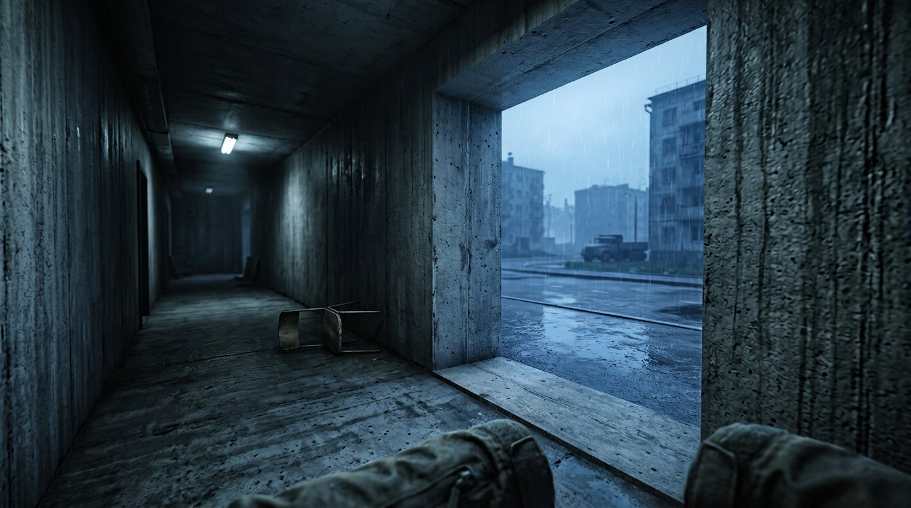
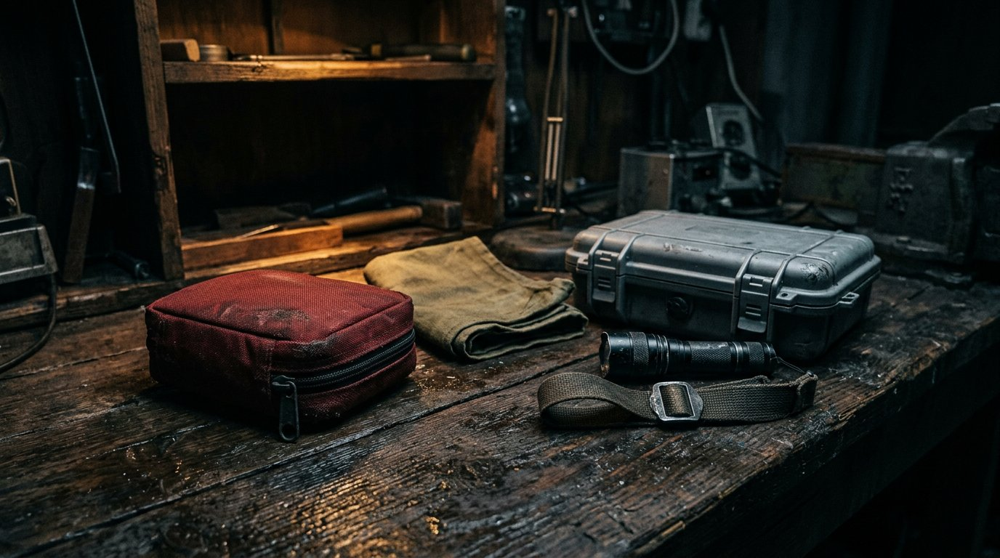

01 Le bon profil
Choisir comment jouer
Un raid est une session : vous entrez sur une carte, poursuivez un objectif et cherchez une sortie. Votre réserve, ou stash, est l’inventaire conservé entre les raids. Le choix du profil détermine ce que vous risquez et où vous progressez.
PvP permanent
Vous rencontrez des joueurs et des adversaires contrôlés par le jeu. L’équipement du PMC vient de votre réserve.
PvP Seasonal
Le personnage, la réserve et l’économie de saison sont distincts. Lisez les modificateurs en cours. La progression de saison repart au changement de saison ; le Battle Pass commun ne fusionne pas les profils.
PvE Zone
Raids contre l’IA, seul ou avec vos amis selon votre accès. Progression propre, mais pertes possibles. Le solo peut tourner localement ; le groupe et certains lieux passent par les serveurs.
Deux façons d’entrer en raid
PMC ou Scav ?
PMC · Votre personnage principal
Vous choisissez le kit et avancez les tâches du profil. À la création, USEC et BEAR donnent des voix, des tenues et un équipement initial différents ; certaines interactions peuvent aussi varier. Aucun choix ne rend un raid sûr. L’objet conservé en conteneur sécurisé n’est pas nécessairement « trouvé en raid ».
Scav · Kit fourni à l’entrée
Vous n’engagez pas le kit de votre PMC. Vérifiez vos sorties et le temps restant, puis transférez le matériel retenu vers la réserve sur l’écran d’après-raid. Le délai avant le prochain Scav dépend notamment de votre réputation auprès de Fence ; ne présumez pas qu’un autre Scav est amical.
02 Avant, pendant, après
Réussir son raid en 10 étapes
Pour le premier, choisissez une carte accessible et visez une seule chose : savoir où vous êtes, puis savoir comment rentrer. Un raid sans butin mais avec une sortie comprise est une bonne répétition.
- Pré-raid
Vérifier le profil
Permanent, Seasonal, PvE ou entraînement ? Sur un nouveau profil, suivez le tutoriel s’il est proposé. En raid ordinaire, prenez une carte déjà accessible.
- Pré-raid
Choisir un objectif
Une reconnaissance ou une tâche. Lisez son libellé : visiter un lieu, en sortir vivant et remettre un objet FIR sont des conditions différentes.
- Pré-raid
Prendre un kit remplaçable
Dans l’inventaire du jeu, vérifiez la compatibilité des chargeurs et munitions. Prévoyez des soins contre les deux types de saignement, une protection si disponible et de la place pour le butin.
- Pré-raid
Vérifier santé et commandes
Vérifiez PV, énergie et hydratation du PMC. Assignez les soins accessibles aux touches rapides, puis mémorisez deux repères de la carte et une deuxième sortie possible.
- Raid
Se situer au départ
Identifiez un repère : façade, carrefour ou panneau. Affichez temps et extractions avec O deux fois (par défaut). Changez de route si la sortie prévue n’est pas dans votre liste.
- Raid
Aller à l’objectif
En jeu, arrêtez-vous pour écouter et recaler votre itinéraire. Si un passage est occupé, décalez votre route ou renoncez à l’objectif : vous n’avez pas à courir après chaque tir entendu.
- Raid
Trier et vérifier son état
Gardez de la place pour l’objet recherché ou les ressources utiles à une tâche. Si vous êtes blessé, mettez votre personnage à couvert avant d’ouvrir Santé et choisissez le soin selon l’état affiché.
- Extraction
Vérifier la condition de sortie
Sortie simple, véhicule, signal, coopération ou autre condition : lisez la liste. Entrez dans la bonne zone, attendez le compteur de sortie et ne confondez pas extraction et transit.
- Bilan
Lire le résultat du raid
Vérifiez le statut, les objectifs validés et l’XP. Si vous jouiez Scav, transférez le butin vers la réserve avant de quitter l’écran de transfert, ou choisissez de vendre ce dont vous ne voulez pas.
- Réserve
Ranger et noter un repère
Dans le stash, vérifiez la coche FIR et gardez les objets d’une tâche proche. Préparez le prochain kit, puis notez une sortie trouvée ou un point où vous vous êtes perdu.
Vérification avant départ
Checklist de raid
03 Revenir avec le butin
Trouver une sortie qui fonctionne
Sur une carte ou dans un guide, les sorties sont des possibilités. Seule la liste en jeu indique celles attribuées à votre personnage dans ce raid. Appuyez deux fois sur O (par défaut) pour afficher votre liste. Si une sortie a une condition, vérifiez-la avant de vous y engager. Un transit mène à une autre carte, pas directement à votre réserve.

- Emercom Checkpoint Si assignée
- Mira Ave (Flare) Signal requis
- Sortie sans interaction
- Emercom Checkpoint et Nakatani Basement Stairs n’exigent pas de paiement d’après le wiki. Vérifiez qu’elles figurent dans votre liste et attendez le compteur dans la zone.
- Véhicule ou signal
- Police Cordon V-Ex : cherchez le véhicule et le montant demandé par l’interface. Mira Ave (Flare) : le wiki indique un signal vert ; repérez la notification de zone et celle de réussite. Si la condition n’est pas remplie, changez de sortie.
- Coopération ou objet
- Scav Checkpoint (Co-op) est décrit comme une sortie PMC + Scav pour le PvP. Vérifiez les modalités dans votre mode. Tartowers Sales Office demande, selon le wiki, la note portant le mot-code Adaptation.
Survived
Extraction avec statut de survie. Le butin éligible peut recevoir la coche Found in Raid.
Run Through
Vous sortez avec vos objets, mais le butin ordinaire n’obtient pas la coche FIR. Certaines tâches exigent explicitement Survived.
KIA, MIA ou abandon
Mort, temps écoulé ou départ du raid : pas d’extraction réussie. Les règles de conteneur sécurisé et d’assurance sont distinctes du FIR.
Si votre tâche exige « Survived » : pour un raid PMC standard, le wiki indique 200 EXP gagnés en raid ou 7 minutes en raid pour éviter Run Through. C’est un repère, pas une règle pour chaque scénario. Ne risquez pas de manquer votre sortie pour atteindre un seuil ; lisez le bilan et la condition exacte de la tâche.
Dans le stash, inspectez la coche sur l’objet avant de le remettre ou de le vendre. Un objet amené par un autre PMC ne devient pas FIR parce que vous le ramassez. La fabrication et les récompenses de tâches peuvent attribuer le statut par une autre voie. Vérifier le statut « trouvé en raid ».
04 Santé du personnage
Lire les états avant de choisir un soin
Dans l’onglet Santé du jeu, regardez les points de vie par zone et les états affichés. Un kit qui restaure des PV ne traite pas forcément un saignement lourd. Vérifiez les effets et les charges dans l’infobulle de l’objet.

- Tête et thorax · 2 zones
- Zones vitales. Le CMS et le Surv12 ne les restaurent pas quand elles sont à 0 PV.
- Bras · 2 zones
- Une blessure ou une fracture peut ralentir des actions du personnage.
- Ventre · 1 zone
- S’il est détruit, la dépense d’énergie et d’hydratation augmente.
- Jambes · 2 zones
- Les blessures et fractures peuvent gêner le déplacement du personnage.
- Saignement léger ou lourd ?
- Choisissez un objet dont l’infobulle mentionne le type affiché : bandage aseptique pour léger, Esmarch ou CAT en jeu pour lourd. Certains kits combinent soin des PV et arrêt d’un saignement si leur réserve suffit.
- Fracture ou seulement des PV en moins ?
- L’attelle retire l’état fracture. Un kit de soins compatible restaure des PV ; les antidouleurs ne réparent pas la zone.
- Zone à 0 PV ?
- Un CMS ou un Surv12 peut rendre une zone non vitale soignable, avec un maximum de PV réduit. Le kit de chirurgie ne remplace pas le kit de soins.
Références : système de santé · effets des objets. En cas de doute, passez par l’onglet Santé pour sélectionner la zone voulue.
05 Réglages utiles
Les commandes à essayer hors d’un raid avec enjeu
Les touches ci-dessous sont les valeurs par défaut documentées en QWERTY. Votre assignation dans Réglages → Commandes fait foi. Pour l’AZERTY, essayez Z Q S D en vérifiant les conflits, notamment Q si l’inclinaison y est encore liée.
| Action | Par défaut | À vérifier ou à remapper |
|---|---|---|
| Temps / sorties | O / O × 2 | Une pression pour le temps, deux pour la liste des extractions. |
| Inventaire | Tab | Depuis l’inventaire, ouvrez l’onglet Santé. |
| Interagir | F | Vérifiez le libellé de l’action contextuelle. |
| Objets rapides | 4 à 9 | Assignez un consommable depuis un emplacement accessible, puis testez la touche. |
| Déplacer un objet | Ctrl gauche + clic gauche | Vérifiez la destination et la place dans la grille. |
| Faire pivoter l’objet | R en le faisant glisser | Utile pour refaire de la place dans la réserve. |
Pour un réglage difficile à diagnostiquer : changez un paramètre à la fois, comparez sur le même lieu en entraînement et revenez à la dernière configuration stable. Testez le périphérique audio effectivement sélectionné à volume confortable. Si un raccourci ne répond pas, vérifiez d’abord sa touche et son type d’appui. Source : commandes du wiki.
06 Questions de débutant
FAQ · 24 réponses
Du premier raid à la réserve. Les questions sont rangées par thème ; le filtre permet aussi de chercher dans les réponses.
Aucune réponse ne correspond. Essayez un autre mot ou effacez le filtre.
Modes et déblocages
Quel profil choisir pour commencer ?
Si vous voulez apprendre contre l’IA et avez accès au PvE officiel, c’est une option avec progression séparée. Pour découvrir la boucle sans enjeu, choisissez l’entraînement sur une carte disponible. Prenez le permanent si vous voulez jouer en PvP sans recommencer à chaque saison.
L’entraînement rend-il du butin ou de l’XP ?
Non. Les objets, l’XP et les objectifs de la session d’entraînement ne sont pas conservés. Un raid PvE officiel peut être calculé sur votre ordinateur en solo et conserver votre progression : « local » ne veut pas dire « entraînement ».
Est-ce que l’entraînement en groupe est la même chose que le PvE coop ?
Non. Cherchez l’option d’entraînement coop avant le départ et vérifiez vos droits si elle manque. La possession du PvE officiel ne permet pas à elle seule de conclure que cette option existe sur le profil. Un raid coop PvE est un vrai raid, avec progression et pertes possibles.
Je ne trouve pas le tutoriel : dois-je réinitialiser mon profil ?
Non. Cherchez l’introduction ou l’étape en cours dans l’onglet de l’histoire, selon le profil sélectionné. Le wiki décrit le tutoriel sur un profil qui démarre ; il ne garantit pas une commande pour le rejouer. Si vous voulez seulement apprendre les commandes, essayez l’entraînement.
Pourquoi une carte affiche-t-elle « Route unknown » ?
Vérifiez que vous êtes sur le bon profil et ouvrez le chapitre Tour dans l’onglet de l’histoire. Le marchand ou l’objectif affiché peut débloquer la destination. Une liste d’accès d’avant la 1.0 ou un guide d’un autre mode ne permet pas de déduire votre prérequis.
Puis-je jouer sur Ground Zero avec un ami de niveau 21 ou plus ?
Le wiki distingue le matchmaking PvP jusqu’au niveau 20 et à partir du niveau 21, sur la base du niveau le plus élevé dans le groupe. Vérifiez la variante affichée avant de partir. Ne déduisez pas de ces paliers la composition d’une session PvE ni sa difficulté.
Personnage et équipement
USEC ou BEAR : qu’est-ce que cela change ?
Selon la faction, les voix, les tenues et le kit de départ changent, ainsi que certaines interactions. Le matériel de départ ne fixe pas votre équipement pour la suite. Si vous débutez, prenez surtout la voix et l’apparence qui vous conviennent.
Quand privilégier un raid Scav ?
Quand vous voulez récupérer des objets ou reconnaître une carte sans risquer le kit de votre PMC. Vous recevez un kit et n’avez pas forcément les mêmes sorties que le PMC. Si vous survivez, pensez au transfert avant de quitter l’écran d’après-raid.
Que signifie la réputation auprès de Fence ?
C’est le « karma Scav ». Elle influe notamment sur le délai avant de rejouer Scav et sur ses conditions de raid. Traitez les autres Scavs comme des personnages dont vous ne connaissez pas le statut : agresser un Scav non hostile peut coûter de la réputation.
Faut-il acheter un kit coûteux avant le premier raid ?
Non. Commencez avec un kit dont vous pouvez absorber la perte. Vérifiez le calibre et la compatibilité des objets dans l’interface, emportez des soins, puis gardez une place libre dans le sac. Une liste d’achats copiée d’un autre mode ne garantit ni les prix ni les offres.
L’assurance me rend-elle tout mon équipement ?
Non. Dans un profil où le service est proposé, un objet peut ne pas revenir si quelqu’un l’extrait ou si vous terminez MIA avec lui sur vous. Il existe des exclusions par carte et par type d’objet. BSG indique que l’assurance n’est pas proposée en Seasonal pendant Kord Breach ; vérifiez toujours le menu du raid.
À quoi sert un conteneur sécurisé ?
Il permet au PMC de conserver certains objets autorisés même quand il ne survit pas, sous réserve des restrictions du jeu. Sauver un objet ne lui conserve pas automatiquement la coche FIR. Vérifiez les règles de l’objet avant de bâtir tout votre raid autour de lui.
Extraction et butin
Pourquoi mon ami et moi n’avons-nous pas la même liste de sorties ?
Le personnage (PMC ou Scav), la position de départ et la session comptent. Avant de suivre quelqu’un, ouvrez chacun la liste dans le raid : O deux fois par défaut. Une sortie sur une carte interactive peut ne pas être attribuée à votre personnage.
Je suis à l’extraction : pourquoi le compteur ne se lance-t-il pas ?
Vérifiez le nom exact, le bon étage et votre liste. Si c’est une sortie conditionnelle, contrôlez l’état en jeu : véhicule présent, paiement validé, signal attendu ou autre condition. Si le temps baisse, prenez la sortie de secours que vous avez déjà repérée.
Un transit me ramène-t-il au stash ?
Non. Vous continuez vers un autre lieu. Certains services peuvent envoyer des objets séparément à la réserve, mais ce n’est pas la même chose que s’extraire. Pour finir ce raid et ranger votre butin, cherchez une extraction assignée.
Pourquoi ai-je « Run Through » alors que j’ai extrait ?
La sortie est réussie mais le raid n’a pas atteint les critères habituels de survie. Pour les raids PMC standard, le wiki indique 200 EXP en raid ou 7 minutes en raid. Lisez la condition exacte de la tâche : certaines étapes de Tour acceptent d’autres résultats.
Pourquoi un objet récupéré n’est-il pas « trouvé en raid » ?
Une extraction Run Through ou une mort peut empêcher la coche. Un objet déjà introduit dans le raid par un PMC ne devient pas FIR en changeant de main. Inspectez-le dans la réserve ; certaines récompenses ou fabrications obtiennent la coche autrement.
J’ai extrait en Scav : où est mon butin ?
Il arrive dans l’interface de transfert, pas directement dans le stash. Déplacez les objets à garder et vérifiez l’espace libre. Si l’écran est encore ouvert, libérez de la place si nécessaire avant de valider. Ne comptez pas sur une récupération après avoir quitté l’écran.
Santé, réglages et progression
Pourquoi mon kit ne stoppe-t-il pas le saignement ?
Vérifiez si l’état est léger ou lourd. L’objet doit traiter ce type de saignement et disposer de suffisamment de points ou de charges. Les PV restaurés par un kit ne suffisent pas à prouver que le saignement s’est arrêté.
Puis-je soigner un membre à 0 PV ?
Pas avec un kit de PV seul. En jeu, un CMS ou un Surv12 peut restaurer une zone non vitale à un faible niveau de PV et en abaisser le maximum. Réparez ensuite les PV avec un soin compatible. Tête et thorax ne sont pas des cibles pour ces kits.
Comment préparer mon PMC après un raid raté ?
Lisez le bilan puis l’état du personnage. Si un écran de soins est proposé, comparez-le aux objets dont vous disposez dans la réserve. Faites l’inventaire des pièces de kit et consommables à remplacer avant de relancer.
Mes touches ne correspondent pas au guide : que faire ?
Les tableaux décrivent le réglage documenté par défaut. Vérifiez les commandes du client, notamment les conflits de touches et les actions qui attendent un double appui. Sur AZERTY, essayez le déplacement et le raccourci des extractions en entraînement.
Mon objectif ne se valide pas : que vérifier ?
Lisez le personnage requis, le lieu, le statut de sortie et l’éventuelle coche sur l’objet. Certaines étapes demandent aussi une remise ou un dialogue en dehors du raid. Le suivi du scénario et les tâches de marchand ne partagent pas toujours le même écran.
Que garder dans la réserve ?
Commencez par les objets d’une tâche proche, les ressources pour un module de planque que vous construisez et un kit complet de rechange. Rangez le reste par usage. Le stash stocke les objets ; la planque (Hideout) sert aussi aux modules et fabrications.
07 Références
Sources et périmètre
Relevé du . Référence : patch 1.3.0.0. Le correctif du 13/11 est confirmé par BSG ; le build 1.3.0.2.48779 vient du wiki. Le client n’a pas été testé : l’écran du raid et les conditions affichées sur votre profil priment sur les guides.
- Source officielleBattlestate Games — patch 1.3.0.0
Patch officiel 1.3.0.0 du 29/10/2026 : Halloween, changements de progression et correctifs visuels de géométrie/colliders sur Icebreaker, Interchange et Shoreline ; pas de tableau d’extractions actives.
- Source officielleBattlestate — correctif technique installé
Message du canal officiel EN BSG, daté du 13/11/2026 à 12:23 : confirme l’installation d’une mise à jour technique et demande son téléchargement via le launcher. Le message ne donne aucun numéro de version/build. Le numéro 1.3.0.2.48779 est rapporté séparément par le changelog communautaire `wiki-changelog`; ne pas l’attribuer à BSG.
- Source officielleBattlestate Games — patch 1.1.0.0
3 août 2026 ; Kord Breach, Battle Pass, réputation, quêtes et économie.
- Wiki communautaireWiki EFT — modes et entraînement
Progression distincte, serveurs PvE et Practice sans sauvegarde.
- Wiki communautaireWiki EFT — le début de Tour
Tutoriel Ground Zero, dialogues et déblocages. La suite de la page décrit des étapes de campagne.
- Wiki communautaireWiki EFT — Ground Zero
Matchmaking ≤20 ou ≥21 par niveau maximal du groupe ; sorties conditionnelles.
- Wiki communautaireWiki EFT — débuter et choisir une faction
Kit initial et voix ; distinctions extractions PMC et Scav.
- Wiki communautaireWiki EFT — jouer Scav
Équipement attribué, réputation auprès de Fence et transfert des objets.
- Wiki communautaireWiki EFT — assurance
Retour conditionnel, restrictions selon objets, cartes et saison, cas MIA.
- Wiki communautaireWiki EFT — Kord Breach et règles de saison
Assurance non offerte pendant Kord Breach selon le wiki ; règles et jalons à dater.
- Wiki communautaireWiki — commandes EFT
Appuyer deux fois sur O par défaut pour voir les extractions du raid.
- Wiki communautaireWiki EFT — Found in Raid
Seuils documentés de Survived, coche FIR et exceptions.
- Wiki communautaireWiki EFT — système de santé
Zones du personnage et états distincts.
- Wiki communautaireWiki EFT — effets des soins en jeu
Classes d’objets, états ciblés et charges.
- Outil communautaireTarkovTracker — version 1.90.0
14/11 : étapes du scénario et conditions d’extraction par mode. Ce n’est pas le client.
- Guide de joueurHappy To Game — débuter en PvE
Transcription du 24/01/2026 : une carte, une sortie de repli, un kit remplaçable.
À lire ensuite
Lore & univers de Tarkov
L’histoire de Norvinsk, le rôle des factions et les liens entre les lieux du jeu et sa campagne.